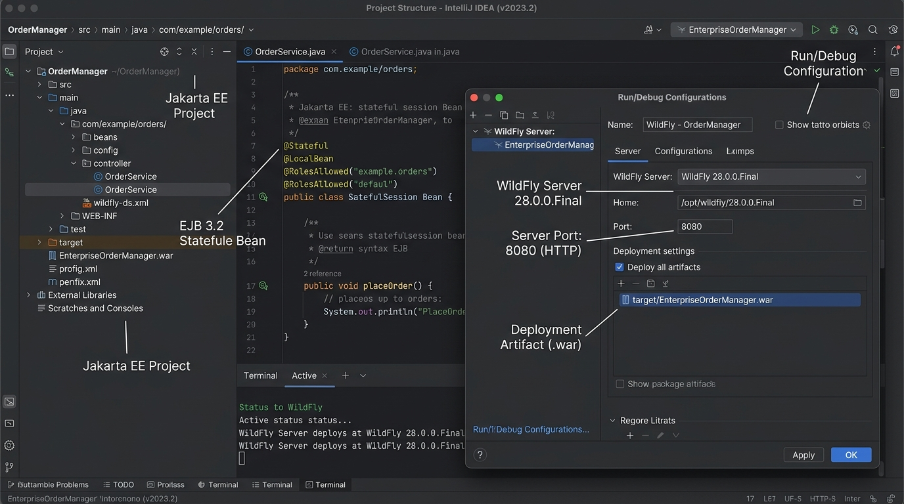

<title>Set Up Your Workshop</title>
<meta name="description" content="One clean install path: Temurin JDK, IntelliJ IDEA, WildFly — with a safe terminal to verify each step.">
<link rel="stylesheet" href="assets/css/styles.css">
<script>window.PAGE = "01-setup";</script>

<main class="page">

  <h1>Unit 01 · Set up your workshop</h1>
  <p class="lede">You don’t need any of this to keep reading — every example on this site runs in your
    browser. Do this unit when you want to build and run real code. We give you <strong>one</strong>
    path, not five.</p>

  <div class="callout callout--analogy">
    <span class="callout__i">🔧</span>
    <div class="callout__b"><b>Analogy</b>
      Building the kitchen before you cook. You need the oven (Java), the workbench (IDE), and the
      restaurant that serves the dish (the application server). Install them in order — each step
      builds on the last.</div>
  </div>

  <span class="eyebrow">concept</span>
  <h2>What you’re installing, and why</h2>
  <div class="tablewrap"><table>
    <thead><tr><th>#</th><th>Tool</th><th>Version</th><th>Its job</th></tr></thead>
    <tbody>
      <tr><td>1</td><td><strong>Eclipse Temurin JDK</strong></td><td>17 (LTS)</td><td>Compiles and runs Java. Temurin is the free, no-login build of the JDK — use it instead of the Oracle download.</td></tr>
      <tr><td>2</td><td><strong>IntelliJ IDEA</strong> Community</td><td>latest</td><td>Where you write, navigate and run code. Comes with Maven built in. (Eclipse also works but this course uses IntelliJ.)</td></tr>
      <tr><td>3</td><td><strong>WildFly</strong></td><td>30+</td><td>The Jakarta EE application server — the “restaurant” that runs your beans. Free, open-source.</td></tr>
      <tr><td>4</td><td>Maven</td><td>3.9+</td><td>Build tool. Bundled inside IntelliJ — no separate install needed.</td></tr>
      <tr><td>5</td><td>PostgreSQL + DBeaver</td><td>16+ / latest</td><td>Database and a GUI for it. Only needed from Unit 05 onward — install later.</td></tr>
    </tbody>
  </table></div>

  <div class="callout callout--mistake">
    <span class="callout__i">⚠️</span>
    <div class="callout__b"><b>What changed from the original setup guide</b>
      The old guide linked the Oracle JDK (needs an account, has licence strings attached) and mixed
      Eclipse and IntelliJ steps. This version: <strong>Temurin JDK 17</strong>, <strong>IntelliJ
      only</strong>, <strong>one Jakarta EE version (10)</strong>. Simpler, fully free.</div>
  </div>

  <span class="eyebrow">concept</span>
  <h2>Step 1 — Install the JDK</h2>
  <ol>
    <li>Go to <strong>adoptium.net</strong> → “Latest LTS Release” → pick <strong>17</strong> for your
      operating system. On Windows choose the <code>.msi</code> installer.</li>
    <li>Run it. Accept the default folder. On Windows, tick <strong>“Set JAVA_HOME variable”</strong>
      and <strong>“Add to PATH”</strong> if offered.</li>
    <li>Open a fresh terminal and check it (try the same command in the panel below):</li>
  </ol>

  <div class="terminal" data-terminal="setup">
    <div class="terminal__bar"></div>
    <div class="terminal__screen"></div>
    <div class="terminal__inputline"></div>
  </div>
  <p style="font-size:.9rem;color:var(--ink-faint)">Type <code>java -version</code> then
    <code>echo %JAVA_HOME%</code> (Windows) or <code>echo $JAVA_HOME</code> (Mac/Linux). You want a
    line starting <code>openjdk version "17</code>.</p>

  <div class="callout">
    <span class="callout__i">🩹</span>
    <div class="callout__b"><b>If <code>java</code> is “not recognised”</b>
      The PATH wasn’t set. Windows: search “environment variables” → add a system variable
      <code>JAVA_HOME</code> pointing at the JDK folder, then add <code>%JAVA_HOME%\bin</code> to
      <code>Path</code>. Close and reopen the terminal.</div>
  </div>

  <span class="eyebrow">concept</span>
  <h2>Step 2 — Install IntelliJ IDEA</h2>
  <ol>
    <li>Get it from <strong>jetbrains.com/idea/download</strong> → the <strong>Community Edition</strong>
      (free) is enough for this course.</li>
    <li>Install with defaults. On first launch, skip the plugin marketplace prompts.</li>
    <li><strong>File → New → Project → Maven Archetype</strong> (or “Jakarta EE”) creates a project
      whose <code>pom.xml</code> is already wired up.</li>
  </ol>

  <span class="eyebrow">concept</span>
  <h2>Step 3 — Install WildFly and connect it to IntelliJ</h2>
  <ol>
    <li>Download <code>wildfly-30.x.x.Final.zip</code> from <strong>wildfly.org/downloads</strong>.
      Unzip it somewhere stable, e.g. <code>C:\wildfly</code>.</li>
    <li>In IntelliJ: the Run configuration dropdown (top right) → <strong>Edit Configurations…</strong>
      → <strong>+</strong> → <strong>JBoss / WildFly Server → Local</strong>.</li>
    <li>Set <strong>Application server</strong> → <strong>Configure…</strong> → point it at your
      unzipped WildFly folder. Leave HTTP port <code>8080</code>, management port <code>9990</code>.</li>
    <li>On the <strong>Deployment</strong> tab, click <strong>+</strong> and add your project’s
      <code>war</code> (or <code>war exploded</code>) artifact.</li>
    <li><strong>Apply → OK</strong>, then press the green <strong>Run</strong> (▶) button.</li>
  </ol>

  <figure>
    
    <figcaption><b>Takeaway:</b> a WildFly “Local” run configuration = a folder path + a list of
      artifacts to deploy. After this, ▶ starts the server and deploys your app in one click.</figcaption>
  </figure>

  <p>WildFly is up when the console prints a line like
    <code>WildFly Full 30.0.1.Final started in 3512ms</code>. Then open
    <strong>http://localhost:8080</strong> for the welcome page and
    <strong>http://localhost:9990</strong> for the admin console.</p>

  <span class="eyebrow">concept</span>
  <h2>Common setup mistakes</h2>
  <div class="tablewrap"><table>
    <thead><tr><th>Symptom</th><th>Cause</th><th>Fix</th></tr></thead>
    <tbody>
      <tr><td><code>java -version</code> not recognised</td><td>PATH / JAVA_HOME not set</td><td>Set <code>JAVA_HOME</code>, add <code>%JAVA_HOME%\bin</code> to PATH, reopen terminal</td></tr>
      <tr><td>WildFly won’t start — “address already in use”</td><td>Port 8080 taken by another app</td><td>Close the other program, or start WildFly with <code>-Djboss.socket.binding.port-offset=100</code></td></tr>
      <tr><td>“No Java virtual machine found”</td><td>JDK broken or wrong architecture</td><td>Reinstall the 64-bit Temurin JDK, restart the machine</td></tr>
      <tr><td>Red squiggles under <code>@Stateless</code></td><td>Jakarta EE API not on the project’s path</td><td>Add <code>jakarta.jakartaee-api</code> (scope <code>provided</code>) to <code>pom.xml</code>, reload Maven</td></tr>
      <tr><td>Deploy fails silently</td><td>Stale build</td><td>Right-click project → Rebuild, then re-run</td></tr>
    </tbody>
  </table></div>

  <span class="eyebrow">check yourself</span>
  <section class="quiz" data-quiz>
    <h3>Check yourself</h3>
    <script type="application/json">
    [
      {"q":"Which JDK does this course recommend, and why?","opts":["Oracle JDK — it's the official one","Eclipse Temurin — free build, no account or licence hassle","Any JDK version 8+","You don't need a JDK, IntelliJ includes Java"],"a":1,"why":"Temurin (from Adoptium) is the free, no-login OpenJDK build. Version 17 LTS is the target here."},
      {"q":"Do you need to install Maven separately?","opts":["Yes, from maven.apache.org","No — IntelliJ bundles it","Only on Windows","Only if you use WildFly"],"a":1,"why":"IntelliJ ships with a working Maven, so `mvn` builds work from the IDE without a separate install."},
      {"q":"WildFly's normal HTTP port and admin-console port are:","opts":["80 and 443","8080 and 9990","3306 and 5432","8000 and 8001"],"a":1,"why":"http://localhost:8080 serves your app; http://localhost:9990 is the management console."},
      {"q":"You see red underlines under @Stateless in a new project. Most likely cause?","opts":["WildFly is not running","The Jakarta EE API dependency is missing from pom.xml","You need to restart the computer","@Stateless was removed from Jakarta EE"],"a":1,"why":"The annotations live in jakarta.jakartaee-api. Add it (scope provided) and reload Maven."}
    ]
    </script>
  </section>

  <span class="eyebrow">recap</span>
  <h2>One-line summary</h2>
  <div class="tablewrap summary"><table><tbody>
    <tr><td>JDK</td><td>Eclipse Temurin 17 — compiles &amp; runs Java. Verify with <code>java -version</code>.</td></tr>
    <tr><td>IDE</td><td>IntelliJ IDEA Community — editor + Maven. One tool, this whole course.</td></tr>
    <tr><td>Server</td><td>WildFly 30+ — runs your beans. Connect it as a “Local” run config in IntelliJ.</td></tr>
    <tr><td>Up &amp; running</td><td>Console says “…started in …ms”; http://localhost:8080 shows the welcome page.</td></tr>
    <tr><td>Database</td><td>PostgreSQL + DBeaver — install later, from Unit 05.</td></tr>
  </tbody></table></div>

</main>

<script src="assets/js/course.js"></script>
<script src="assets/js/runner.js"></script>
<script src="assets/js/terminal.js"></script>
